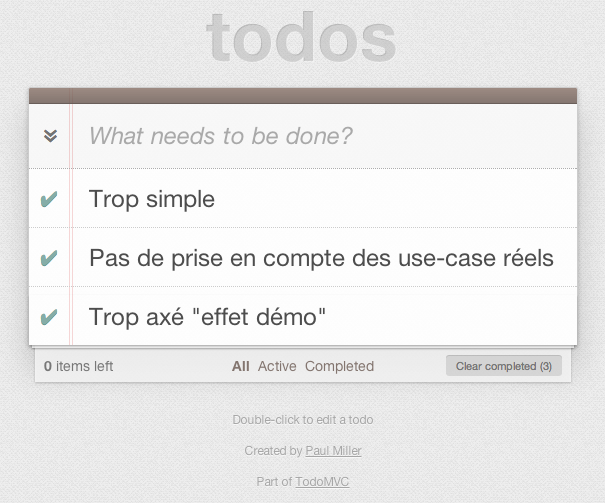

Architecture et bonnes pratiques en webapp
Retours d'expériences

MAD
Dev UI
JavaScript Ninja
Clever Age
High-Scalability
High-traffic
Rich Client Interfaces
Modularity
Real-time interactions
WEBAPP
Web vs App ?
TodoMVC : le mauvais élève
Real-life projects

Site Communautaire
- Chaplin.js
- Brunch.io
☛ Delicious.com / Moviepilot…

App In-Browser
- Marionette.js
- Grunt
☛ Airbrake.io / RavenHQ…

Backbone
socle backend stable
Pourquoi Backbone.js ?
- agnostic
- léger
- faible couple de dépendances
- adapté à la mobilité
Pourquoi pas seul ?
- trop de choses à réécrire
- pas de cadre
- limité à la sync back / events
Architecture globale
Zoom : Layouts & UI
Layout
Chaplin
- Abstraction de DOM Document dans un Objet Layout
- Liaison directe depuis les contrôleur
- Catch App-wide events
Marionette
- Layout par module
- Nesting
Views
Chaplin
- Convention over configuration pour le rendering
- Memory-safe binding
- Compositing
Marionette
- Regions & Subviews
- Auto-rendering model.views / collection.views
- Utilise des events custom
Collection Views
Chaplin
- Filtering
- Throbblers
- Cache
- Fallback content
Marionette
- Callbacks & Events
- Et… euh… humm…
Zoom: #g11n
Librairies
- Pomo
- Jed
- WebL10n
Zoom: Modularité
Require.js
Pattern AMD vs CommonJS
Modules
Chaplin
- Mediator : Comunication entre modules via Pub/Sub pattern
- Abstraction des instanciations de contrôleurs dans un Dispatcher
- Fichier de routes unique
Marionette
- Chaque module déclare ses routes
- Contrôleurs…?
Zoom: Authentification et Session
Sécurité
- Pas d'accès API direct
- Authentification forte
- Côté back uniquement
Droits et permissions
- Isolation des droits sur la route
- Utilisation de modèles spécifiques
- Contrôles back
CSRF
- prévenir les attaques
- identifier les clients
- double token jetable
Auth intégrée à la Webapp ?
- Auth côté back
- Stockage des permissions dans LocalStorage
- Contrôle des expirations
Zoom : Websocket? Webservices?
Communication temps-réel
- socket.io
- rafraichissement des vues via des events custom (push)
- node.js pour une communication asynchrone vers l’API
Utilisation des services
couche RESTful + JSON
Zoom: Stratégie de cache
Côté Node.js
- persistence memcache partagée
- cluster de workers node.js
- rafraichissement async des réponses API
Côté App
- LocalStorage / LocalSession avec Lauwnchair pour la data
- cache.manifest pour les assets
Déploiement et usage offline
Livraison
- Déploiement en recette continue
- Supervision Jenkins
- Déploiement Fabric
- Tag des builds pour livraison en prod
Persistence des assets
- push vers CDN (Akamai…)
- invalidation cache.manifest
Bonus : CoffeeScript inside !
Une tasse ?
- JS syntactic sugar
- Compile vers JS
- Utilisé dans les deux cas d’app
Un sucre ?
- Simplicité d’écriture et de documentation
- Offre une structure Objet plus accessible
- Facilite le Duck typing
- Simplifie la gestion des dépendances et des modules
This is not the end…
Erreurs & Ecueils
- Rester modulaire jusque dans les vues
- Eviter les dépendances au maximum, ou avec un faible couple
- Documentez convenablement en largement
- Utilisez les bons outils (compils, tests, etc)
Etat des lieux
- Jeunesse de JS sous cette forme (et des produits)
- Tout à découvrir
- Ce ne sont que des idées/essais/propositions